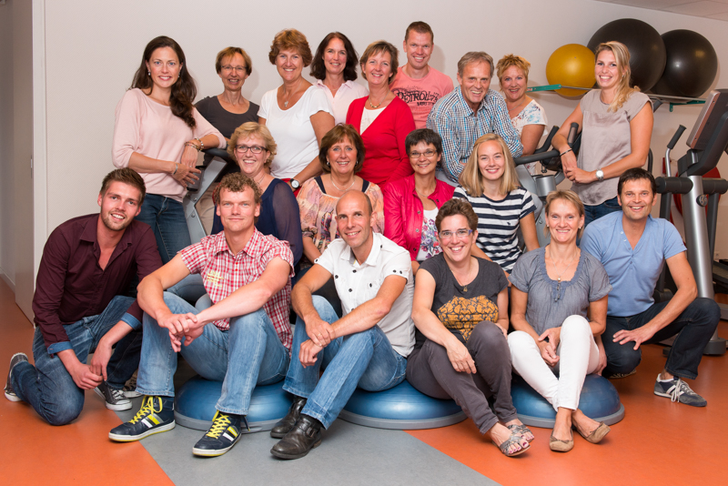

ik hou van hobby's
--------------------------------------------------------------------Van grootse personeelsevenementen tot bedrijfsuitjes, van bijzondere dagprogramma’s tot openingen en marketing events: diversiteit is onze kracht. Wij brengen grootschalige evenementen tot grote hoogtes, maar maken ook kleinere mijlpalen onvergetelijk speciaal. Als full service evenementenbureau met meer dan 20 jaar ervaring snappen we wat nodig is om jouw evenement tot een succes te maken. Transparant, persoonlijk, ambachtelijk, enthousiast en innovatief. Dat maakt het verschil. Alles al gezien en meegemaakt? Wij bewijzen het tegendeel!
ontstaan
--------------------------------------------------------------------ik hou van hobby's is ontstaan in 1999. Toen de makers genaamt Mike Oxmall en Mike oxbig elkaar ontmoet hadden. Ze begonnen te praten en kwamen op een punt waar ze het jammer vonden dat er veel dingen waren die ze wouden doen maar te duur waren om voor een paar keer te doen.Dat is waneer ze het idee kregen voor ik hou van hobby's,ze gingen een bureau maken zodat zij hobby's konden organiezeren en die dan verkopen. daardoor konden mensen ook duurdere hobby's 1 of 2 keer doen zonder te veel te hoeven betalen.
